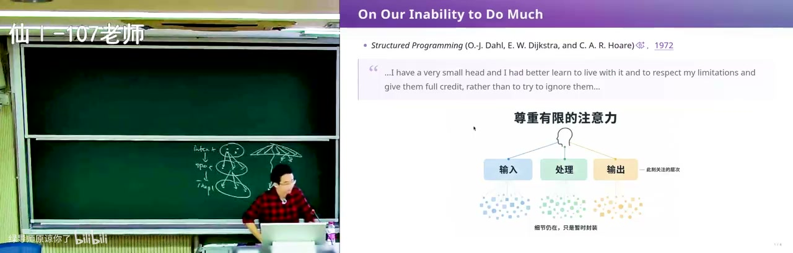
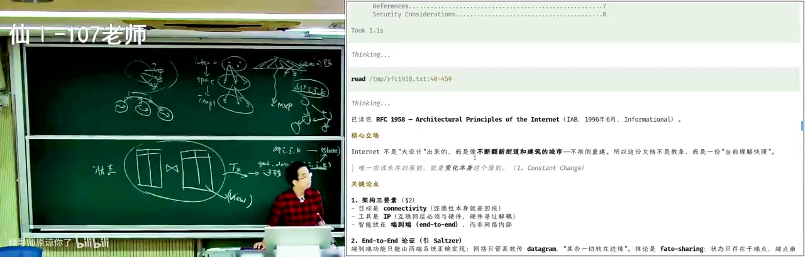
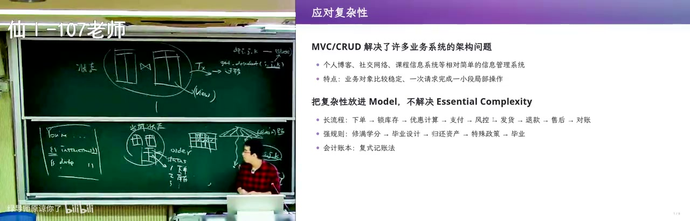

需求和架构 (2) [07-Raw/26生成式软件工程/NJU]
这一讲把「需求怎么收敛、架构怎么隔离复杂性」讲成了历史课：从 Dijkstra 的结构化程序、Guy Steele 的 Growing a Language，到 UNIX、关系数据库、MVC/MVVM，最后落到 event sourcing 为什么能治「当前状态数据库」的不一致。
- UP：绿导师原谅你了（南京大学 蒋炎岩）
- 链接：https://www.bilibili.com/video/BV1JGap6LE74
- 播放量：12502
- 时长：99:42
官方章节时间轴
| 时间 | 章节 |
|---|---|
| 00:00–14:17 | 回顾 |
| 14:17–49:21 | 阅读经典 |
| 49:21–1:19:04 | 典型的系统架构 |
| 1:19:04–1:39:41 | 应对复杂性 |
讲了什么
画面解读： 承接上讲：做设计决定就背技术债，Brooks 说本质是驾驭复杂性，选课的容量、先修、教室冲突是消不掉的本质复杂性；文件系统好 hack 却没事务，数据库给事务却要穿过中间层调试。再以「登录」演示需求怎么滚成泥潭。
开场承接上一讲：需求与架构分不开，因为只要做设计决定，就背上技术债。Brooks 说软件工程的本质是驾驭复杂性；选课系统的容量、先修、时间冲突、教室、师生借教室，这些是问题域里的 essential complexity，消不掉，只能用架构隔离。任何技术选型都是 trade-off：文件系统好 hack、UNIX 工具能直接组合，但没有原子事务和并发控制；数据库给你 transaction、备份、scale，代价是调试要穿过中间层，不能像文件一样随手用工具看。
他用「登录」说明需求会怎样滚成泥潭：直接让 GPT 做 login，它会猜一个用户名密码方案；有了注册就要确认密码，然后用户一定会忘密码，于是要忘记密码；发邮件要选邮件服务，发短信要通道；想用微信/支付宝登录，个人开发者可能连公司实体都没有。所以需求阶段要 DFS 做 MVP 验证最重要的点，也要 BFS 比较登录方式、首页布局这些分叉；最后总要把需求写出来，但代码本身也可以是需求——把文档删掉让 AI 读代码，也能还原出需求点，只是会非常长。

画面解读： 用 AI 重读老 paper：Dijkstra 说人脑很小，只能靠抽象与层次分解，把不能一次理解的东西变成可逐层理解的；再用动态规划说明「抽象丢失」。Guy Steele 全篇只用单音节词，主张语言要小、要有形式语义、扩展必须是一等公民且可组合。
架构的作用有两个：分解 essential complexity（数据库把存储、可靠性、原子性收进一个 contract，你只管业务）；收缩 spec→implementation 的可能性。需求收缩 intent→spec 的不确定性，架构收缩 spec→implementation 的不确定性，代价还是技术债。
然后他开始「用 AI 重读老 paper」。Dijkstra 的《Notes on Structured Programming》（1972）里说：我们能力有限，i have a very small head，最好承认并尊重这个限制；办法是抽象 + 层次分解，把不能一次理解的东西变成可以逐层理解的东西。书里用「串项链」比喻：把一颗颗珍珠（模块）串起来。1972 年就在讲 class and object、coroutine；今天的 coroutine 多被当成轻量线程（Go 那种），而当年是在没有现成模型时应对软件复杂性。他还用动态规划讲「抽象丢失」：写 dp[i][j][k] 时把状态空间/转移图这层抽象扔掉了，所以错了很难调；把状态和迁移显式建模、可视化，就能调，再改写成高效形式。
第二个经典是 Guy Steele 1998 年 OOPSLA 的 keynote《Growing a Language》：全篇只用单音节英文词，遇到双音节以上的词必须当场定义。他用这个形式说明：语言一开始必须小、必须有形式语义、必须能执行；但需求会膨胀，一次性设计一个大语言又交付太慢，会在成功前被小而丑的语言取代。C 就是典型：没有运算符重载，表达「往队列里放东西」很痛苦，qsort 的 int cmp(const void*, const void*) 加 nmemb/size 也很丑；但 C 和机器一一对应、可移植，所以赢。结论不是二选一，而是「生长」：扩展必须是一等公民，扩展之间可以组合；Java 他只主张加泛型、运算符重载、轻量用户自定义类三样。他顺带批评 OJ 把人训练成「解题机器」：题对了代码就扔，不需要扩展，也就不会想架构。

画面解读： 三个可生长架构：UNIX 每个工具只做一件事、用文本流协作，管道把人与程序统一起来；关系数据库用二维表加 SQL，把优化器与事务藏在接口后；Internet 只做连通性，RFC 1958 说唯一该永存的原则是变化本身。
接着是三个「可生长架构」的经典案例。UNIX：每个工具 do one thing well，程序之间用文本流协作，文本接口同时统一了人、程序、程序与程序；管道 1964 年就有想法、1983 年进入 UNIX；还有统一命令行参数、统一输出格式、exit status。现场他用 fzf 式菜单打开文件，说明「打开文件对话框」也可以由工具组合出来，不必被 IDE/OS 锁死。关系数据库（Codd 1970）：把世界建模成二维表，SQL 是接口，查询优化器、事务、视图都在后面；schema 可扩展，于是图书馆、学籍、财务、订单都能信息化。Internet：只做 connectivity，TCP 保证可靠传输，上面跑什么不管；RFC 1958（1996）说「唯一应该永存的原则就是变化本身」，于是 HTTP→HTTPS、REST 一层层长出来。
最后是业务系统架构。数据库 + 操作系统 + Internet 打好的舞台上，最直接的做法是「每个页面/功能 = 一个数据库 transaction」：需求点投射成 CRUD，当前状态用表表示，页面是状态的视图。MVC（1979）把它形式化：model 是当前世界的 knowledge，view 是 model 的 pure function，controller 接收用户输入、翻译成 transaction。但 MVC 不够：页面上有大量不在数据库里的状态——展开的菜单、搜索框、hover、query string；于是 MVVM 把 view state 也当成 model，React 用 pure function + virtual DOM，Vue 用依赖图，两者都在藏「状态变了怎么更新 DOM」的复杂性。
真正没解决的是长流程。淘宝下单要锁库存、算优惠、支付确认、风控、发货、退款、售后、对账；如果你只在 order 表加一列 status，流程一长就会出现「既该毕业又不该毕业」这种不一致状态，甚至是静默 corrupt 的数据。他用成绩更正举例：一门先修课从及格改成不及格，学分、后续选课、能否毕业全都连锁变化，手改当前状态数据库必然漏。于是他讲复式记账：每笔交易同时记入两个以上账户、金额相等方向相反，才能自平衡、查错；但传统记账仍然只记当前状态。

画面解读： 业务系统里每个功能等于一个数据库事务，MVC 与 MVVM 把模型、页面状态都形式化。但长流程撑不住：订单表只加一列状态就会出现「既该毕业又不该毕业」；于是引入复式记账与事件溯源，只追加事实、重放出报表，让派生状态可溯源。
他自己的记账系统用 event sourcing + LLM 当编译器：只追加不可篡改的流水账条目，每条由 LLM 编译成对资产负债表、现金流量表等的若干操作，当前报表 = 对所有操作做 reduce。这样翻译错了可以直接改那一条重放，不用改历史；还能推演「风控成功/失败会到哪个状态」、评估破产概率。更深一层：当前状态数据库把 derived state（能不能毕业、学分够不够）存成 0/1 字段，依赖关系藏在代码里；event sourcing 把事实、视图、预期分开，所有计算可溯源、可重放，追加新事实而不是手改数据库。他最后说关系数据库犯了个「billion dollar mistake」式的错：没有把图灵可计算的计算关系当成 first-class citizen 管起来，所以 derived state 永远有不一致的风险；MVVM、React data flow、event sourcing 都是在试图把 derived state 和 dependency 显式化。
关键点
- 需求阶段要同时 DFS（MVP 验证）和 BFS（登录方式、首页布局等分叉），否则会被一个「理所当然」的方案拖进泥潭。
- 架构 = 收缩 spec→implementation 的可能性；需求和架构都在用「现在做决定」换「未来付技术债」。
- Dijkstra 的核心不是结构化编程语法，而是「人脑很小，所以抽象 + 分层」；动态规划难调，是因为写代码时把状态空间这层抽象丢了。
- Guy Steele 的结论：语言/系统要能生长，扩展必须是一等公民且可组合，而不是一次性满足需求清单。
- UNIX 的文本流、关系数据库的 SQL、Internet 的 connectivity，都是「只统一一个接口，其余交给生态」的架构。
- 当前状态数据库 + status 字段撑不住长流程；event sourcing 用「追加事实 + 重放」把依赖和派生状态显式化。
为什么值得看
给被「订单状态」「学籍状态」这类长流程折磨的人看。它没停在 MVC，而是把「当前状态为什么会不一致」推到 event sourcing 和复式记账，还给了 LLM 当编译器的做法。前半段老 paper 串讲能练品味；坑是跨度大，没做过业务系统会觉得散。
我的一句话
这讲最狠的一句是「现在是过去的结果」——你要是还在往 order 表里加 status 字段，那不是在建模，是在给未来的自己埋一颗静默 corrupt 的雷。